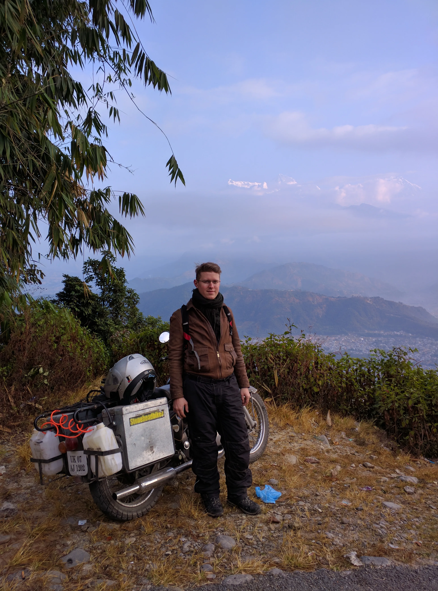

Hi there and welcome to Way & Witness!
My name is Matt Szaszko and after a decade of working in the tech industry I realized that my true passion is for learning about history, uncovering insights and connecting the dots between the past and why our society is the way it is today and sharing it with others in the form of a conversation, rather than a lecture. Join me on a journey of witnessing the silent remnants of the past. Let me be your guide to understand what happened and how the consequences are still with us today.
I've been riding since I was 14 years old and hasn't stopped since. Over the years, I've explored most of Northwest Europe, the UK and Scandinavia as well as the Alps and the French Riviera, with a pop over to Morocco too. From the Sahara to Nordkapp. And that's not all. Having lived in South India, I discovered its rich history with a few trips to the Himalayas as well. Completed a Hanoi to Ho Chi Minh City ride and crisscrossed the Cordilleras in The Philippines. A dream I've yet to realize is to retrace the route of Ervin Baktay in Kashmir.
Over the past few years I got heavily invested in motorcycle camping as well. With a 3 months wildcamping adventure under my belt circling the Baltic sea and a monthlong trip riding the legendary NC500 in Scotland I am well versed in the art of living off of your bike even in harsh conditions.
Let me be your partner in exploring the rich history of Europe and South Asia. Primarily, but not exclusively focusing on the history of conflict.
Travel philosophy
Way & Witness is different from just riding your motorcycle around cool places. It is witnessing history and understanding its lasting impact on the society of today. It is a conversation, rather than a one-way information dump. You are not just along for the ride—you are participating fully, witnessing the past and the future in the making.